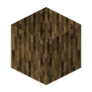
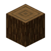
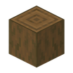

#原木
minecraft:logs
标签成员36
深色橡木原木深色橡木去皮深色橡木原木去皮深色橡木金合欢原木金合欢木去皮金合欢原木去皮金合欢木白桦原木白桦木去皮白桦原木去皮白桦木丛林原木丛林木去皮丛林原木去皮丛林木

云杉原木云杉木
去皮云杉原木去皮云杉木红树原木红树木去皮红树原木去皮红树木樱花原木樱花木去皮樱花原木去皮樱花木绯红菌柄去皮绯红菌柄绯红菌核去皮绯红菌核诡异菌柄去皮诡异菌柄诡异菌核去皮诡异菌核用到它的 Create 配方
本站收录的 Create 配方里没有用到它。